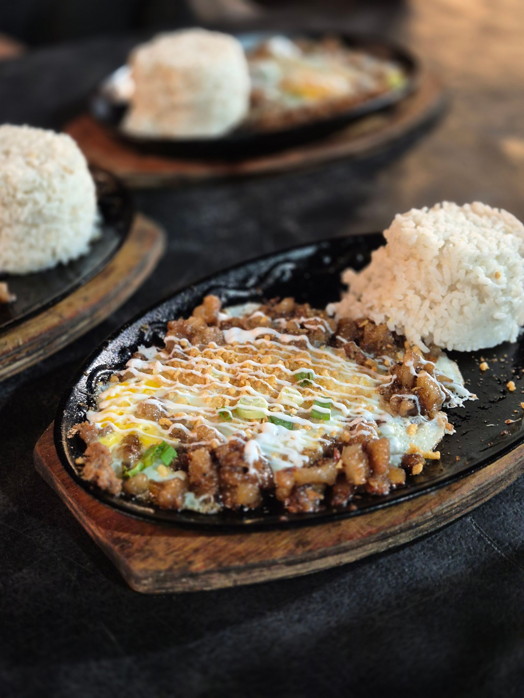

Home
Sisig Recipe

Photo by Mark John Hilario
Pexels
A popular Filipino dish served sizzling on a hotplate.
A classic main dish or a favorite appetizer to enjoy when hanging out with friends.
It's packed with flavor and is a dish you will surely enjoy.
Ingredients
- 1 ½ lbs. Pork belly
- 3 tablespoons Knorr Liquid Seasoning
- 1 lb. pig face
- 4 ounces chicken liver
- 2 pieces onion
- ½ cup chicharon
- 3 tablespoons Lady’s Choice Mayonnaise
- 2 teaspoons onion powder
- ¼ teaspoon ground black pepper
- 1 tablespoon butter
- 3 tablespoons cooking oil
- 2 quarts water
Steps
- Boil pork belly and pig face in water for 1 hour on medium heat, then drain and let cool.
- Grill the boiled meats for 5 minutes per side, then chop or mince them.
- Heat oil in a pan and sauté onions for 1 minute.
- Add chicken liver, cooking and mashing it until broken down completely.
- Mix in the chopped meat and crushed chicharon until well combined.
- Season with onion powder, ground black pepper, and Knorr Liquid Seasoning, then stir.
- Stir in mayonnaise and cook for 3 more minutes, then set aside.
- Heat butter on a metal plate, transfer the sisig onto it until it sizzles, and top with extra chicharon.
- Serve hot with calamansi or lime alongside white rice.
Recipe adapted from Sisig Recipe by Vanjo Merano on Panlasang Pinoy